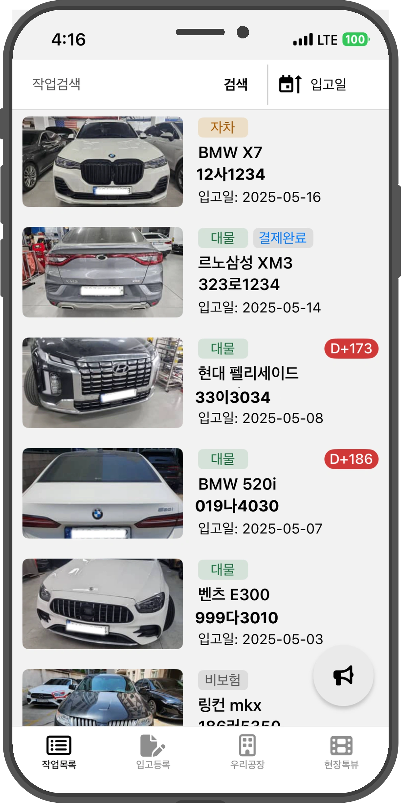
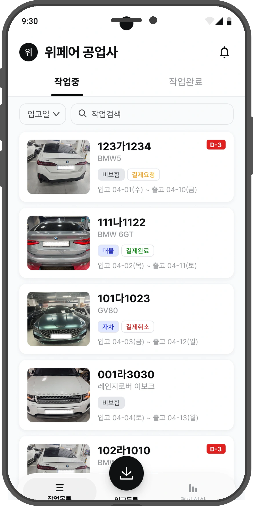
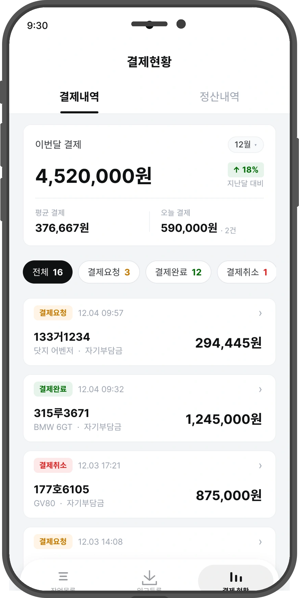
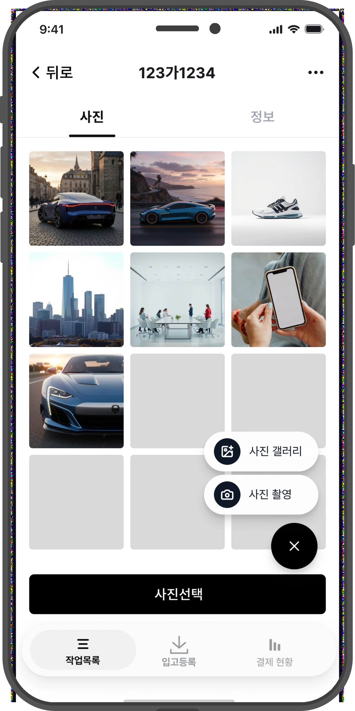
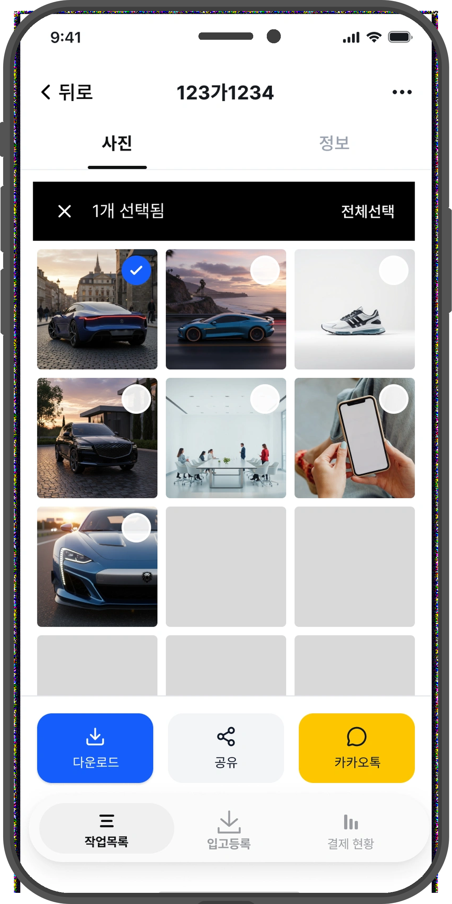
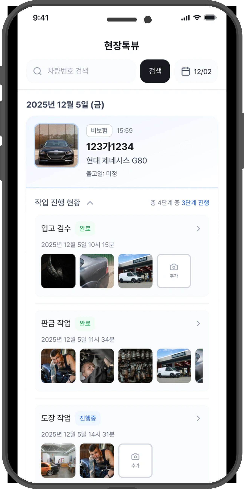

DOMAIN
자동차 공업사 · B2B SaaS
사고수리는 공정별 증빙 사진이 곧 매출이다. 그런데 현장은 장갑 낀 손, 끊기는 네트워크, 수백 장의 카톡 사진 — 증빙이 새기 딱 좋은 환경이었다. 위페어 파트너스는 500개 이상의 공업사가 쓰는, 그 누수를 막는 운영 앱이다.
In collision repair, the photos are the invoice. One missing shot means a slashed — or rejected — insurance claim. Wepair Partners is the field app that stops the leak, for 500+ auto shops.
공정별 증빙 사진이 곧 매출이다. 작업자가 내부 판금이나 부품 교체 사진을 놓치면, 보험금이 깎이거나 청구가 통째로 반려된다.
카톡·개인 폰으로 흩어져 찍힌 수백 장을, 퇴근 전 차량번호별로 일일이 확인하고 폴더링한다. 매일 반복되는 1시간 이상의 야근.
“내 차 언제 나와요?” 고객 문의 전화마다 대표는 하던 일을 멈추고 현장으로 간다. 확인하고 돌아오면, 또 다른 일이 끊겨 있다.
화면을 그리기 전에 현장을 정의했다. 중형 사고수리 공장의 물리적 환경과 두 사용자의 맥락을 분석해, 모든 설계의 기준이 될 원칙부터 세웠다.
각 화면은 디자인이 아니라 판단의 결과다. 1인 환경에서 중요한 건 ‘무엇을 만드느냐’보다 무엇을 먼저 만들고 무엇을 미루느냐였다.
처음 가설은 ‘UI를 다듬으면 된다’였다. 현장 VOC 12건이 그 가설을 기각했다 — 문제는 시각이 아니라 정보 위계였다. 번호판을 메인 정보로 승격하고 카드를 분리, 터치 영역을 표준화했다. 핸들을 드래그해 전·후를 비교해보세요.
The first hypothesis was “just polish the UI.” 12 field interviews killed it — the problem was hierarchy, not pixels.
다 비슷해 보여서 중요한 게 뭔지 한눈에 안 들어와요.


AS-IS TO-BE매일 보는 매출이 ‘우리공장’ 탭 2단계 안에 숨어 있었다. 흔한 처방은 ‘단계를 줄이자’지만, 진짜 문제는 깊이가 아니라 위치였다 — 결제현황을 아예 메인 탭으로 끌어올리고 정산을 통합했다.
Daily revenue sat two taps deep. The fix wasn’t fewer steps — it was the right location.
결제내역이랑 정산현황을 한 화면에서 한 번에 보고 싶어요.

화면만 보면 사진 기능은 멀쩡했다. 문제는 사용 맥락이었다 — 장갑 낀 한 손, 상단까지 닿지 않는 동선. 기능을 엄지존 하단으로 내리고 진입점을 통합, 다중 선택·일괄 공유를 더했다.
On screen, the camera worked fine. In context — one gloved hand, mid-repair — it didn’t.
사진 여러 장 골라서 보내는 게, 장갑 낀 손으론 너무 번거로워요.


이상적 해법은 계정 구조 분리였다. 작업자·관리자 계정을 나눠 로그인 기반으로 ‘누가’를 자동 식별 — 1차 시안까지 그렸다. 하지만 개발 공수가 컸다. 계정 분리는 보류하고, 작업자 이름 표시 + 공정 단계 그룹화로 핵심 가치부터 먼저 릴리즈했다. 1인 디자이너의 일은 ‘맞는 답’을 그리는 게 아니라, 지금 출시 가능한 답을 고르는 판단이었다.
The ideal answer was account separation. The shippable answer was a name label. A solo designer ships the second.
사진을 누가 찍었는지, 지금 누가 무슨 작업을 하는지 구분이 안 돼요.

메인 작업목록 화면(위 DECISION 01)의 최종안은 감으로 정하지 않았다. 두 페르소나와 실기기 이슈 리포트를 기준으로 4개 버전을 만들고, 5개 항목으로 정량 평가했다 — 폰트 확대 대응 · 디바이스 호환성 · 차량 식별성 · 고령 접근성 · 밀도와 가독성의 균형.
단일 항목 ‘한 화면에 더 많은 차량을 보고 싶다’만 떼어 보면, 리스트형(001)이 70점으로 오히려 1위였다. 하지만 카드를 리스트로 바꾸는 순간 폰트 확대 대응·디바이스 호환성·고령 터치 타겟이 모두 후퇴한다. 그리고 잘못된 차량에 사진을 올리면 — 그건 곧 보험 청구 오류이자 직접적 금전 손해다.
폰트를 키워도 카드 높이만 늘고 레이아웃은 유지된다. 1카드 = 1개의 큰 터치 영역으로 55세 작업자의 오작동을 줄인다. 안전성·접근성·이슈 대응을 우선했다.
현장의 밀도 니즈는 유효하다 — 단, 카드 높이 최소화·필터·스크롤 최적화로 보완 가능한 범위. ‘카드 높이 최소화 A/B’는 다음 과제로 남겼다.
Primitive · Semantic · Component 3-레이어 토큰으로, 혼자서도 운영 가능한 최소 구조를 설계했다. Semantic 토큰만 바꾸면 다크모드와 브랜드가 확장된다 — 아래에서 직접 눌러보세요.
→ 같은 컴포넌트, 토큰만 교체. PDF는 이걸 캡처할 수 있을 뿐, 만져볼 수는 없다.
PM·PO·UX라이터가 없는 자리. 부족한 역할을 Claude Code 기반 워크플로우로 구조화하고, 검수·확정은 사람이 소유했다. PRD·UX 라이팅 기준을 0→1로.
처음엔 UX 라이팅 봇만 만들려 했다. 만들다 보니 문제는 문구가 아니라 비어 있는 역할이었다.